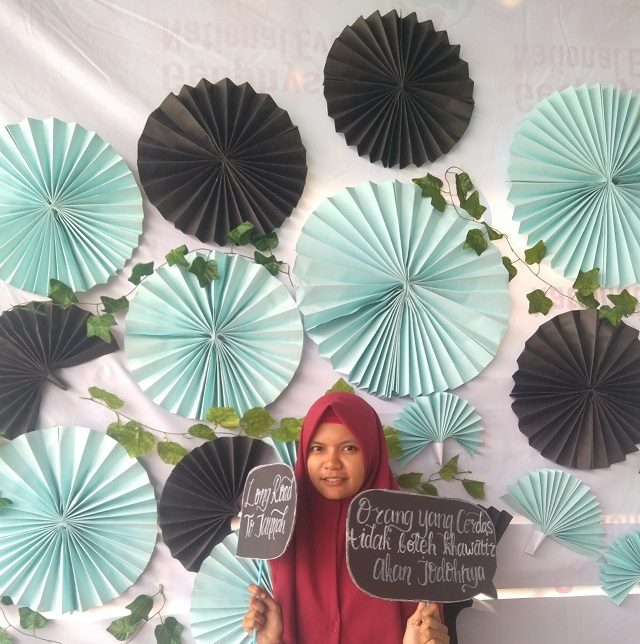

MY PORTFOLIO
Tentang Saya
Dede Rodhatul Farida dengan nama panggilan dede adalah perempuan yang lahir pada tahun 2000 di Kabupaten Tanggamus, Lampung. namun dede memiliki darah asli minang dari kedua orangtuanya yang merupakan perantau di tanah Lampung, awalnya dede adalah siswa biasa yang menyukai pelajaran matematika sehingga pada tahun 2017 dede berencana untuk mengikuti olimpiade sains nasional pada bidang matematika, namun ternyata rencana itu tidak berhasil dijalankan dikarenakan sesuatu alasan dede dipindahkan pada osn bidang TIK yang waktu itu sempat di rayu oleh beberapa guru karena bidang TIK tidak jauh berbeda dengan matematika, puji syukur alhamdulillah dede berhasil memenangkan juara 1 osn bidang TIK tingkat kabupaten yang sangat tidak disangka-sangka karena pada pelatihan bisa dibilang tidak ada guru pada bidang sesuai yang mendampingi alias otodidak dari buku yang ada di perpustakaan, pada osn bidan TIK tersebut soal-soal yang tersedia memang kebanyakan mirip dengan tipe soal matematika yaitu menghitung namun soal-soal sangat menarik karena soal ini sangat sederhana penyampaian permasalahan nya namun untuk dapat menyelesaikan soal dibutuhkan waktu berpikir yang lumayan mendalam untuk menyelesaikan permasalahan yang diberikan, sejak saat itu dede jadi tertarik dengan persoalan-persoalan seperti itu yang kemudian diketahui bahwa hal itu dinamakan algoritma dimana kita harus berpikir secara terstruktur untuk memecahkan masalah, bisa saja pemecahan masalah itu sangat mudah namun manusia cenderung suka berpikir terlalu jauh untuk itu diperlukan pemikiran yang terstruktur untuk pemecahan masalah ini
pada tahun 2018 dede mulai kuliah di Institut Teknologi Sumatera dengan program studi Teknik Informatika, awalnya dede tidak mengetahui apa yang akan dilakukan oleh prodi ini nantinya, namun seiring berjalannya waktu dede mulai mengerti betapa menarik dan bergunanya program studi ini, singkat cerita pada tahun ke 2 kuliah ada seorang teman yang mengenalkan pada dede tentang website dari situ dede timbul rasa penasaran terkait pembuatan website
Menjadi web developer itu bukanlah hal yang tidak mungkin bahwa semua orang bisa mendapatkannya karena untuk menjadi web developer pada saat ini sangat mudah jika memiliki tekat yang kuat, bahkan bisa belajar tanpa mentor secara langsung pun itu sangat mungkin, belajar otodidak bukanlah cara belajar yang buruk selagi memiliki tekat yang kuat untuk menjadi web developer, amat banyak referensi belajar gratis yang bisa didapatkan di internet, sejauh ini dede belajar melalui internet meskipun diperkuliahan ada matakuliah nya tetap saja hanya 10% yang bisa didapatkan dari sana sisanya memang harus eksplor sendiri